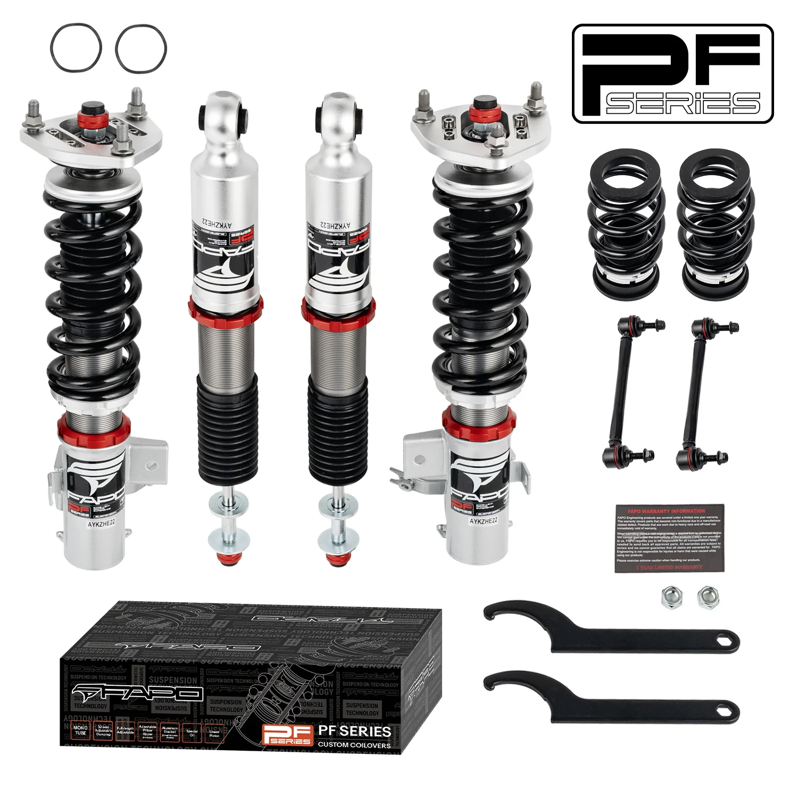

32-stopniowe zawieszenie gwintowane Do Honda Civic non-SI 9th Gen FG/FB 2012-2015 & Acura ILX DE1 2013-2015 PF102530
32-Level Damping Coilover for Honda Civic non-SI 9th Gen FG/FB 2012-2015 & Acura ILX DE1 2013-2015 PF102530. Coilovers. Produkt dostępny w katalogu FAPO Polska z obsługą zamówienia przez nasz sklep. SKU PF102530.
32-Level Damping Coilover for Honda Civic non-SI 9th Gen FG/FB 2012-2015 & Acura ILX DE1 2013-2015 PF102530. Coilovers, Fitment by contact. Product available in the FAPO Poland catalogue with order support through our store. SKU PF102530.
2299,99 PLN
Opis produktu
32-Level Damping Coilover for Honda Civic non-SI 9th Gen FG/FB 2012-2015 & Acura ILX DE1 2013-2015 PF102530. Coilovers. Produkt dostępny w katalogu FAPO Polska z obsługą zamówienia przez nasz sklep. SKU PF102530.
32-Level Damping Coilover for Honda Civic non-SI 9th Gen FG/FB 2012-2015 & Acura ILX DE1 2013-2015 PF102530. Coilovers, Fitment by contact. Product available in the FAPO Poland catalogue with order support through our store. SKU PF102530.
FAPO Polska
Ten produkt obsługujemy lokalnie
Autoryzowana obsługa
FAPO Polska prowadzi katalog, kontakt i zamówienia bez odsyłania klienta do zewnętrznych sklepów.
Dobór po aucie
Sprawdzamy dopasowanie produktu do pojazdu, rocznika i wersji przed finalizacją zamówienia.
Wsparcie po zakupie
Masz kontakt w Polsce w sprawach zamówień, wysyłki, gwarancji i zwrotów.